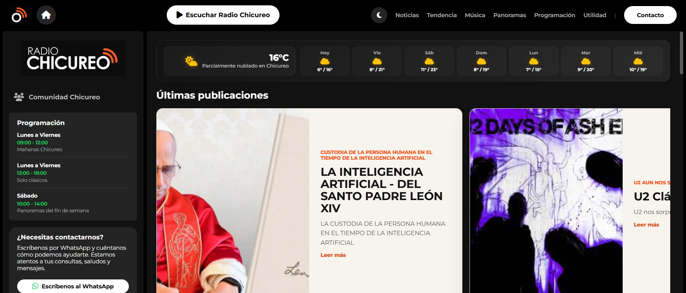
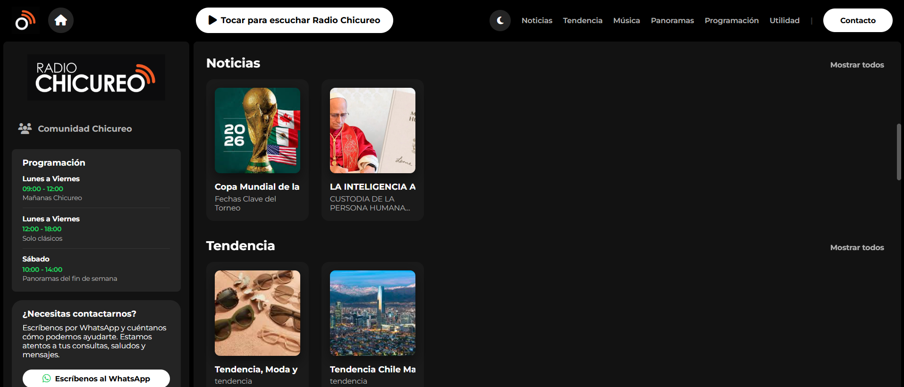
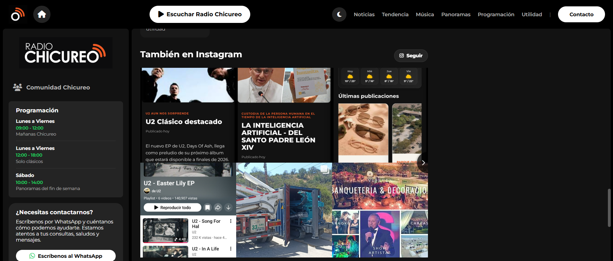
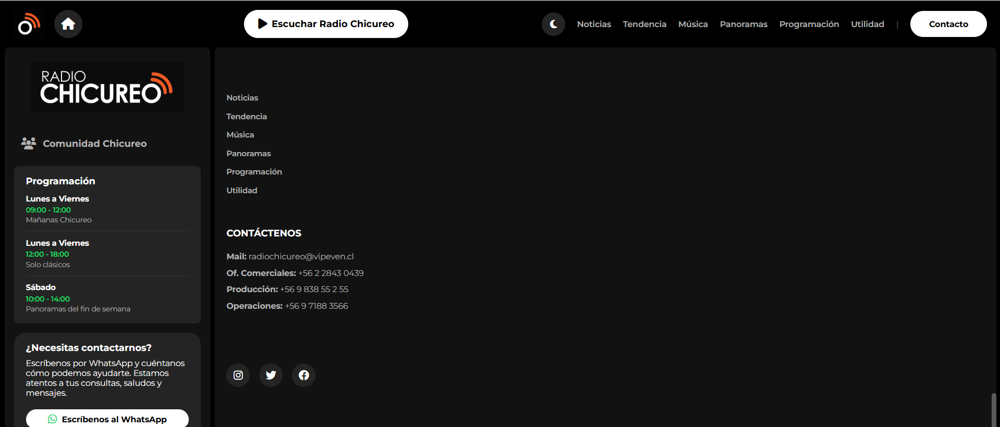
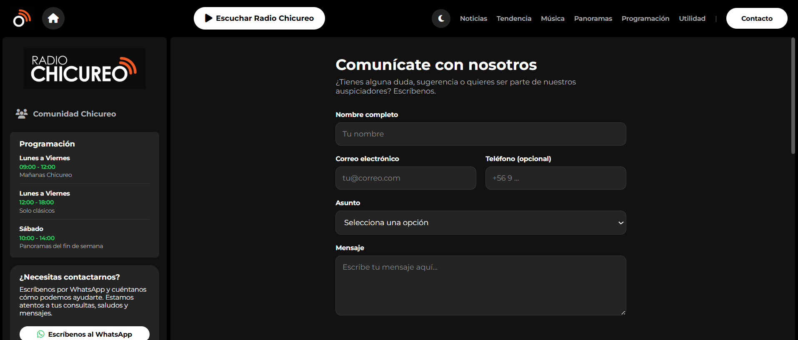
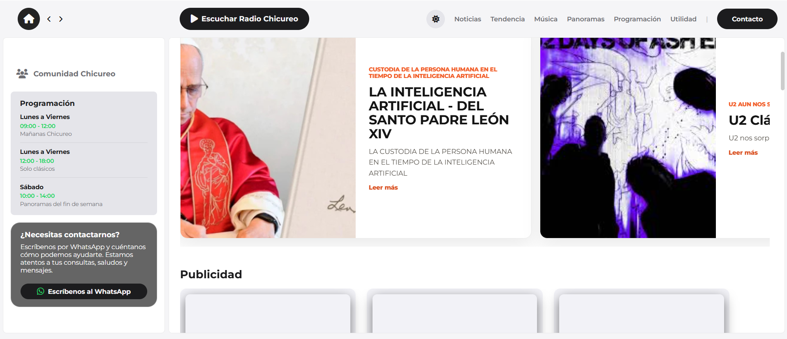
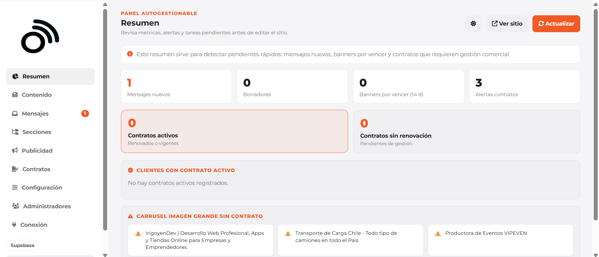
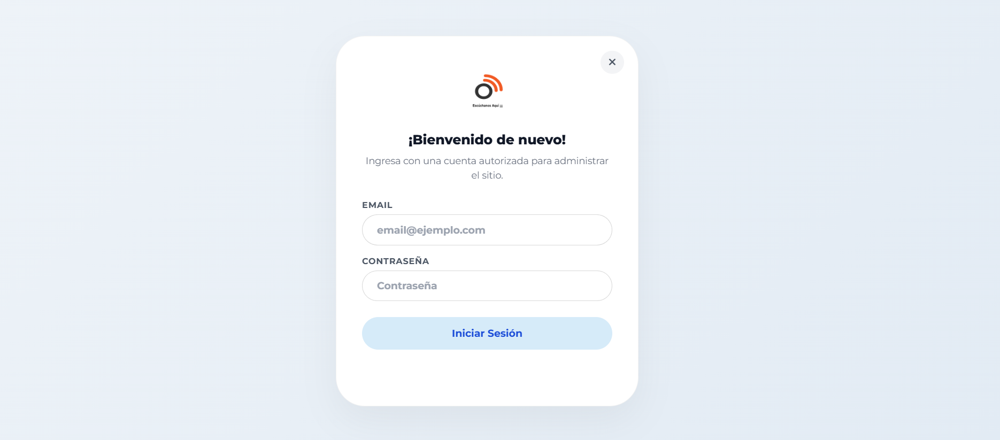
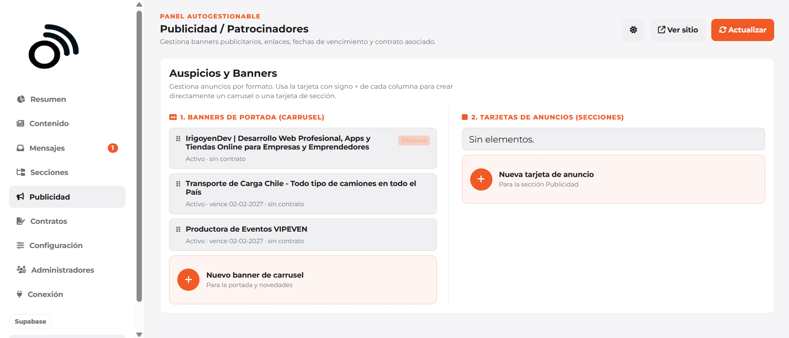

Live Player & Performance
Integrated continuous streaming. The frontend uses lightweight components to ensure page loading speeds remain high during audio playback.
Case study · Independent community platform
A self-managed digital platform built by the Radio Chicureo community to stream online, share local content and public utility notices—non-profit with no official commercial affiliation with the station.
Stack
Radio Chicureo Community independently centralizes local broadcasting: online streaming, community news, cultural programming, public utility, and direct listener contact. The site allows the community team to publish content and keep neighbors informed autonomously, without commercial interest.
Listeners and neighbors in Chicureo needed an alternative digital space to stay informed, stream the signal, and share local community topics efficiently. As an independent project with no official commercial ties to the radio, a low-cost, self-managed, and easy-to-administer platform was required.
The platform enables:
I built the product end to end—focusing on performance, reliability, and security. Here is how it was structured:
Established Vite and CSS front-end layout, keeping public streaming lightweight and separating operational dashboard workflows.
Designed schemas for articles, banners, program schedules, and contact messages, enforcing constraints and relational consistency.
Integrated continuous online audio playback, allowing users to listen smoothly while exploring other website content.
Created an internal portal to publish, edit, and schedule posts, manage advertising banners, and view listener messages.
Implemented form validation and API routing for transactional notifications via Resend, alerting the team on commercial queries.
Applied secure authentication, database row-level security (RLS) rules, SEO tags, and configured deployment pipelines on Vercel.
Public homepage, web player, editorial sections, contact form, and secure admin panel for daily operations.









Designed for a real-world online radio—fast loading, easy content management, and robust security.
Integrated continuous streaming. The frontend uses lightweight components to ensure page loading speeds remain high during audio playback.
Organized structured data in Supabase for programming, banners, and news. Handled proper relational links so editorial contents are safely queried.
Configured strict user authentication and row-level security (RLS) rules. Prevents unauthorised modifications to database entries.
Radio Chicureo unifies live streaming, content writing, contact queries, and advertising banner scheduling into a single web application. The radio team operates with full autonomy, cutting down management overhead.
I design full-stack audio platforms, content managers, and secure admin hubs built for traffic. Let's talk about your next project.